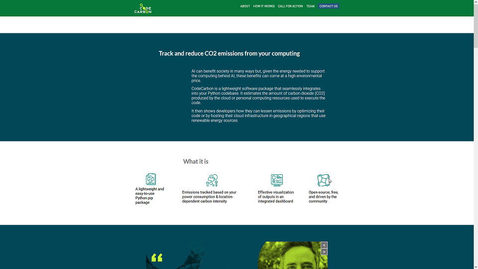
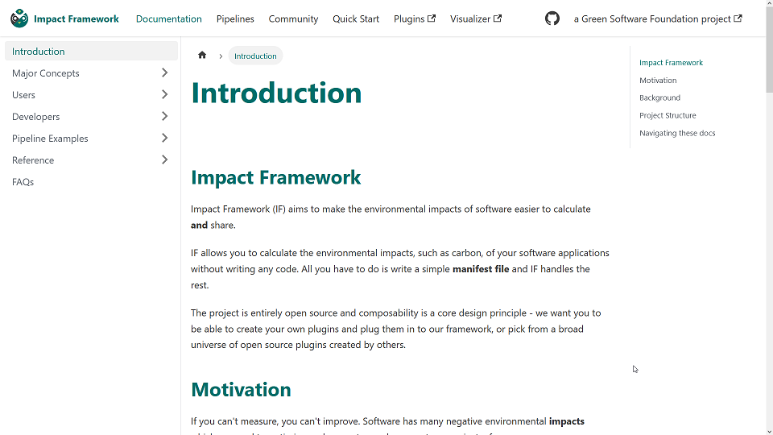
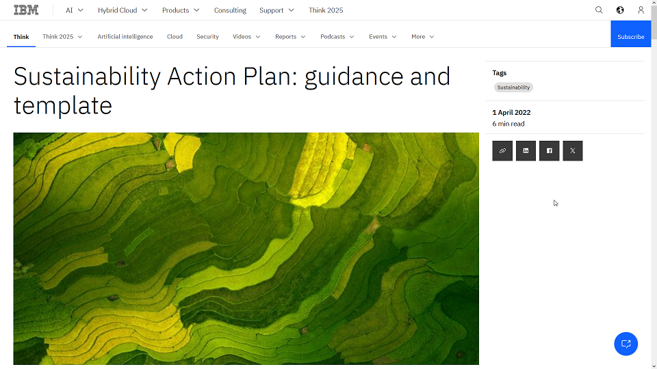

Sustainable Toolkit
According to Belkir and Elmeligi (2018, s. 459), the IT sector will be responsible for 14% of the world’s carbon emissions by 2040 if we continue business-as-usual (Circular Computing, 2021)
If you want to get started and help preventing this, explore the contents on this page that we can offer to help your and/or your company’s software go green
Table of contents
Tools
Below is an overview of tools you can use to help you with sustainable practices related to green coding. It contains monitoring and reporting tools, in addition to optimization
CodeCardbon
CodeCarbon is a tool for Python that can help measure energy usage, estimate CO2 emission, and identity parts of the code that are energy intensive. This can point out which areas that need to be optimized and improved to reduce the environmental impact (CodeCarbon, u.å., Kandimalla & Bolla, 2024, s. 8).
Green Web check tool
Check out Green Web Foundation’s green web check tool to check if a website is running on green energy (link below) (Green Web Foundation, u.å.)

Website Carbon calculator
This tool is similar to the previous one, however, the Website Carbon calculator’s tool also attempts to calculate carbon emissions attributed to a website (Website Carbon, u.å; Herelius, 2022, s. 14).

PurgeCSS
PurgeCSS is a tool that can remove unused CSS by analyzing your content and CSS files. In return, this tool can reduce the size of the CSS file and thus reduce the impact on the environment by increasing energy efficiency (PurgeCSS, 2023; Herelius, 2022, s. 17, 31)

Frameworks
The toolkit includes various frameworks that support sustainable software development, helping teams create applications with minimal environmental impact and increasing knowledge on sustainable practices
Impact Framework
Impact Framework is an open-source project made by the Green Software Foundation. It helps with measuring, calculating and sharing data on software’s impact on the environment. This can be helpful to teams who wish to create software with minimal environmental impact (Green Software Foundation, u.å.). Click on the link below to visit their website and their guide on how to get started with the Impact Framework
Visit Green Software Foundation
Sustainability action plan
By making your business or organization write a sustainability action plan, it will help you figure out what to do and stay on track. The action plan details how the organization/company can achieve sustainability goals over time (Australian Government Business Community, u.å.). The International Business Machines Corporation (2022) has a sustainability action plan template and a guidon how to use it
Visit International Business Machines Corporation's sustainability action plan template
Checklist for green programming
Below is a checklist you can follow to practice green coding:
✔ Efficient algorithm: Implement efficient and optimized algorithms to reduce the energy consumption of software (Kandimalla & Bolla, 2024, s. 8).
✔ Code Optimization: Optimize code regularly to reduce its energy footprint. Optimizations include (but not limited to) minimizing the use of resource intensive tasks, removing unnecessary computations and redundancy, and ensuring efficient memory storage (s. 8).
✔ Energy-Efficient Programming Languages: Choose a programming language that is energy efficient to reduce energy consumption. Examples of such programming languages are C, C++, and Rust (s. 8).
✔ Energy Profiling Tools: Execute monitoring of code with tools to track energy usage and identify what parts of the code in the software that are energy intensive. Use this data to optimize energy consumption during the software’s development (s. 8).
✔ Green hosting: Choose a web hosting provider that runs on green energy for your website (Green Web Foundation, u.å.)
✔ Sustainability action plan: Sign an action plan to help achieve sustainability goals over time (International Business Machines Corporation [IBM], 2022).
Sources
Australian Government Business Community. (u.å.). Develop your sustainability action plan. Hentet 13. mars 2025 fra https://business.gov.au/environmental-management/develop-your-sustainability-action-plan
Belkhir, L., & Elmeligi, A. (2018). Assessing ICT global emissions footprint: Trends to 2040 & recommendations. Journal of Cleaner Production, 2018(177), 448-463. https://doi.org/10.1016/j.jclepro.2017.12.239
Circular Computing. (2021, august 9.). What Is The Carbon Footprint Of A Laptop? Hentet fra https://circularcomputing.com/news/carbon-footprint-laptop/
CodeCarbon. (u.å.). Track and reduce CO2 emissions from your computing. Hentet 12. mars 2025 fra https://codecarbon.io/
Green Web Foundation. (u.å.). Does your website run on green energy? Hentet 11. mars 2025 fra https://www.thegreenwebfoundation.org/green-web-check
Green Software Foundation project. (u.å.). Introduction: Impact Framework. Hentet 12. mars 2025 fra https://if.greensoftware.foundation/intro/
Herelius, S. (2022). Green coding: Can we make our carbon footprint smaller through coding? [Bacheloroppgave, Blekinge Institute of Technology]. Digitala Vetenskapliga Arkivet. https://www.diva-portal.org/smash/record.jsf?pid=diva2%3A1675178&dswid=-9733
International Business Machines Corporation [IBM]. (2022, 1. april). Sustainability Action Plan: guidance and template. https://www.ibm.com/think/topics/sustainability-action-plan-guidance-template
Kandimalla, A. M., Bolla, A. (2024). Green Coding Practices in Software Development: Perceptions, Barriers, and Strategies for Change [Masteroppgave, Blekinge Institute of Technology]. Digitala Vetenskapliga Arkivet. https://www.diva-portal.org/smash/get/diva2:1909766/FULLTEXT01.pdf
Purge CSS. (2023, 18. oktober). About PurgeCSS. https://purgecss.com/introduction.html
Website Carbon. (u.å.). The original Website Carbon calculator. Hentet 11. mars 2025 fra https://www.websitecarbon.com/